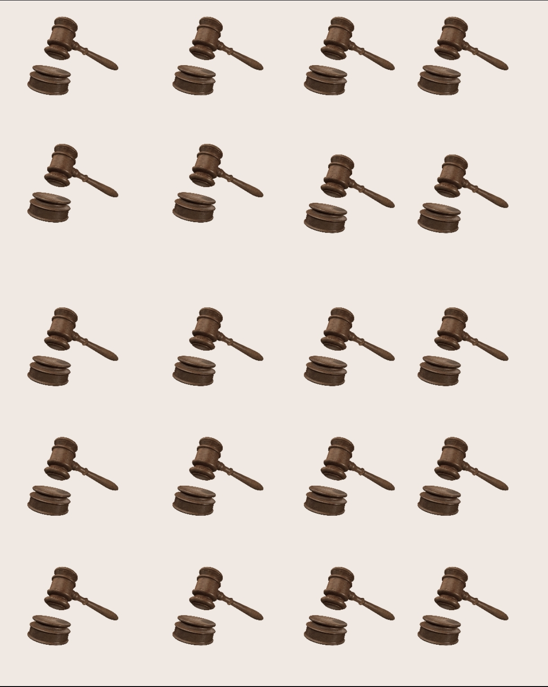

Somos una casa de Remate y tasaciones de muebles e inmuebles,con más de 4 años de experiencia en el sector.
Nos enorgullece contar con nuestro Martillero Público titulado, debidamente registrado en la Asociación de Rematadores del Uruguay, lo que garantiza transparencia y legalidad en cada uno de nuestros operaciones. Nuestro escritorio y local de remate se encuentra ubicado en Young-Río Negro.
Esté proyecto es impulsado por un equipo comprometido con la exelencia:
Emanuel: Rematador y tasador Público.
Alfonso: Responsable de la atención al público directo.
Gimena: Encargada de gestión administrativa y atención personalizada.
Estamos aquí para brindarte el mejor asesoramiento. ¡Te esperamos!
